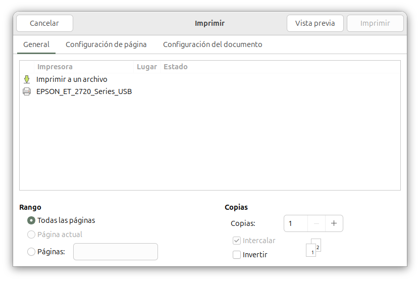

Imprimir¶
Pulsando en el menú Archivo > Imprimir podemos enviar el texto del documento actual a la impresora. Se abrirá una ventana de diálogo para establecer:
- si queremos enviar la salida a un archivo de texto
- si queremos utilizar la impresora determinada

Rango de páginas¶
En la ventana de diálogo podemos establecer si queremos imprimir todo el documento, una página concreta o un rango de páginas.
Podemos indicar el número de copias, y si queremos que se impriman en orden natural o invertido.
Configuración de página y documento¶
La ventana de diálogo Imprimir tiene dos pestañas Configuración de página y Configuración de documento donde podemos establecer:
- Tamaño de papel
- Disposición, vertical o apaisado
- Escala
- Impresión por una/ambas caras
- Imprimir solo páginas pares/impares
En la pestaña Configuración del documento podemos establecer que se añada numeración de páginas, números de línea al margen, número de página en la parte inferior de cada una, y un encabezado con nombre del documento, fecha y hora, número de página y total de páginas.
El menú Editar > Preferencias > Impresión permite establecer las opciones por defecto.
De forma predeterminada, el nombre del archivo del documento con la información de la ruta completa se agrega al encabezado. Si queremos mostrar solo el nombre base del archivo (sin ninguna información de ruta), se puede configurar en el cuadro de diálogo de preferencias.
Podemos ajustar el formato de la fecha y hora. Por defecto es %c, lo que usa el formato por defecto adaptado a la configuración local de nuestra máquina. Para obtener una lista de especificadores de conversión disponibles, consultar https://docs.gtk.org/glib/method.DateTime.format.html
Previsualización¶
En sistemas tipo Unix, el cuadro de diálogo de impresión ofrece una vista previa de impresión, pulsando en el botón Vista previa. Se mostrará con un visor de PDF. De forma predeterminada, si usamos la biblioteca GTK como soporte gráfico de Geany, se utiliza un programa llamado Evince. Para utilizar otro programa, consultar el manual de Geany, apartado Printing support.
Imprimir mediante comandos¶
Al margen de Geany, podemos imprimir un archivo de texto mediante del comando:
$ lpr nombre_fichero
El menú Editar > Preferencias > Impresión permite establecer si la impresión se realiza mediante las capacidades gráficas de la biblioteca GTK, o bien ejecutando directamente este comando. Pero en este caso, el resultado impreso no contiene resaltado de sintaxis. El comando predeterminado es:
%lpr %f
%f será sustituido por el nombre del archivo actual.
Con este comando, prescindiremos de las capacidades de la biblioteca GTK, y además, Geany no mostrará los errores del comando en un terminal, por lo que debemos asegurarnos de que funciona.
Imprimir a un archivo¶
Podemos obtener un archivo en formato pdf si, en la ventana de diálogo, seleccionamos Imprimir a un archivo. En la ventana de dialogo seleccionar el nombre del archivo y establecer un formato, que puede ser PDF, SVG o PostScript.
Exportar a otros formatos¶
El complemento Exportar añade una nueva entrada Exportar al menú Herramientas. Pulsando en ella podemos guardar el texto del archivo actual como HTML o LaTeX.